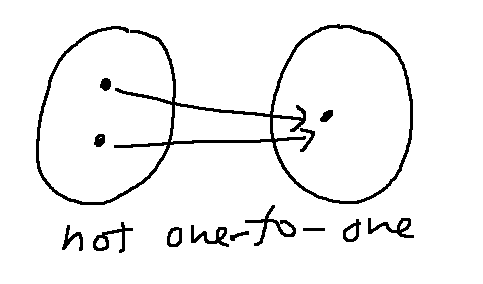
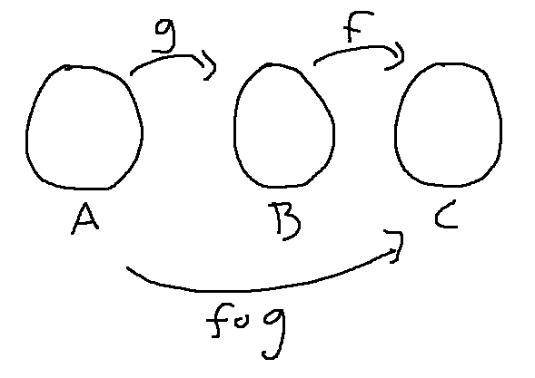
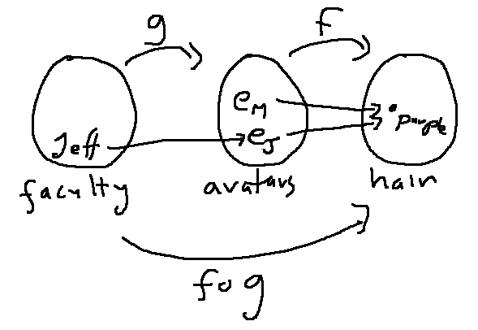
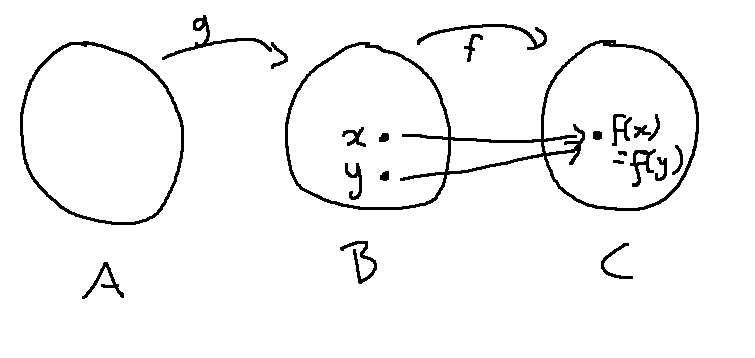
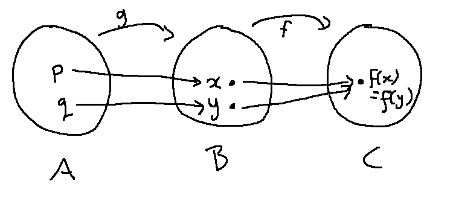
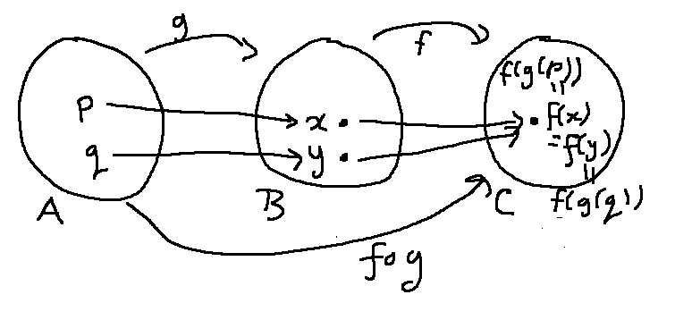

Now, let's look at the formal definition of one-to-one. Recall that a function is one-to-one if it doesn't do this:

Suppose we have a function \(f: A \rightarrow B\). People often describe one-to-one informally as "every element of A has a distinct image." That's true, but a bit vague. What is its image supposed to be distinct from? It's best not to use this as a formal definition.
Here's a precise statement of what we intended to say:
For any x,y in A, if \(x \not= y\), then \(f(x) \not= f(y)\).
This is good for understanding. But it's hard to write proofs following this structure. The information given in the hypothesis is negative. If x and y have internal structure (e.g. a pair rather than just a number), there could be multiple ways for them not to be equal. That's not a good starting point for a proof.
For writing proofs, it's better to use the contrapositive:
For any x,y in A, if \(f(x) = f(y)\), then \(x = y\).
The contrapositive version gives you a strong piece of positive information as your starting point.
Consider this problem:
Suppose that \(g:\mathbb{Z} \rightarrow \mathbb{Z}\) is one-to-one.
Also suppose that \(f:\mathbb{Z} \rightarrow \mathbb{Z}^2\) is defined by \(f(x) = (g(x)|x|, |x|)\).
Prove that f is one-to-one.
We'll pattern our proof on the contrapostive version of the definition. Notice that our claim is about f, and the inputs to f come from \(\mathbb{Z}\).
Proof: Let x and y be integers. Suppose that f(x) = f(y).
....
So x = y, which is what we needed to prove.
Now let's apply the definition of f:
Proof: Let x and y be integers. Suppose that f(x) = f(y).
By the definition of f, this means that \((g(x)|x|,|x|) = (g(y)|y|,|y|)\).
So \(g(x)|x| = g(y)|y|\) and \(|x| = |y|\).
....
So x = y, which is what we needed to prove.
Notice that we haven't used one piece of our given information: g is one-to-one. What that means is that if we know that g(x) = g(y), then we'll have x=y. So it would be good to derive the equation g(x) = g(y).
Proof: Let x and y be integers. Suppose that f(x) = f(y).
By the definition of f, this means that \((g(x)|x|,|x|) = (g(y)|y|,|y|)\).
So \(g(x)|x| = g(y)|y|\) and \(|x| = |y|\).
Dividing the first equation by the second, we get \(g(x) = g(y)\).
Since g is one-to-one, this implies that x = y, which is what we needed to prove.
Well, almost. What did your teachers warn you about checking when you divide by a mystery quantity? Oh, yeah, what if \(x = y = 0\)?
But this still wasn't such a bad draft proof. It's handling all but one value and perhaps we can just add a special-case patch....
Proof: Let x and y be integers. Suppose that f(x) = f(y).
By the definition of f, this means that \((g(x)|x|,|x|) = (g(y)|y|,|y|)\).
So \(g(x)|x| = g(y)|y|\) and \(|x| = |y|\).There are two cases:
Case 1: If \(|x| = |y| = 0\), then x=y.
Case 2: \(|x| = |y| \not = 0\). Dividing \(g(x)|x| = g(y)|y|\) by \(|x| = |y|\) gives us \(g(x) = g(y)\).
Since g is onto, this implies that x = y.In both cases, x=y, which is what we needed to prove.
Consider this claim:
Claim: For any sets A, B, and C, and any functions \(g: A\rightarrow B\) and \(f: B\rightarrow C\), If \(f \circ g\) is one-to-one and g is onto, then f is one-to-one
What does this even mean and why do I think it's true? It's probably a good idea to pin that down before launching into writing a formal proof.
First, recall the definition of \(f \circ g\).
\((f \circ g)(x) = f(g(x)) \)
This is a place where you need to be careful and check what convention the class is using. There are mathematicians who define \(\circ\) so that the functions end up in the opposite order. It doesn't really matter as long as everyone in the class is using the same convention.
Now, let's use a bubble diagram to keep track of where the various functions go. Otherwise it's easy to get confused about where inputs and outputs live.

It probably kind-of makes sense that the one-to-one-ness of f and \(f \circ g\) should be related somehow. But why is onto involved? Let's look at a concrete example.
At once point, a lot of the CS theory faculty at U. Illinois played World of Warcraft. In this game, people really got into designing their avatars. So perhaps Jeff Erickson may have played as an elf with a purple braid. We can model this up as a mapping from each person to their avatar, and then a mapping from each World of Warcraft avatar to its hairstyle. \(f \circ g\) then maps each faculty member to their avatar's hairstyle.
g:{CS theory faculty} \(\rightarrow\) {World of Warcraft avatars}
f: {World of Warcraft avatars} \(\rightarrow\) {hairstyles}
There were only 10 CS theory faculty and the game supports about 3000 different hairstyles (including color). So it's plausible that every faculty member had an avatar with a different hairstyle. In other words, \(f \circ g\) is one-to-one.
However there were about 10 million World of Warcraft subscribers at the time, each with their own avatar. So it's impossible for all the avatars to have distinct hairstyles, because there are only 3000 of them. So f can't be one-to-one.
The reason for this problem is that someone else (e.g. Michelle Obama) might be playing as an elf (\(e_M\)) with the same purple braid as Jeff's avatar (\(e_J\)). The function g can't be onto because the set of WOW avatars (10 million avatars) is much bigger than the set of CS theory faculty (10 people).

So our claim about one-to-one is only going to work for the case when g's output covers the entire middle set B.
Now, let's try to prove our original claim. First, sketch out a standard direct proof outline:
Proof: Let A, B, and C be sets and suppose that \(g: A\rightarrow B\) and \(f: B\rightarrow C\) are functions. Also suppose that \(f \circ g\) is one-to-one and g is onto....
Then f is one-to-one. \(\Box\)
Our goal is to prove that f is one-to-one. So let's expand that outline. Notice that the inputs to f come from set B, so that's where we need to pick our two values from.
Proof: Let A, B, and C be sets and suppose that \(g: A\rightarrow B\) and \(f: B\rightarrow C\) are functions. Also suppose that \(f \circ g\) is one-to-one and g is onto.Let x and y be elements of B. Suppose that \(f(x) = f(y)\).
...
Then x=y.
Since \(f(x) = f(y)\) implies that x=y, f is one-to-one. \(\Box\)
Now what? Let's put x and y onto our bubble diagram

The most relevant piece of given information is that \(f \circ g\) is one-to-one. But the inputs to \(f \circ g\) live in A. So, in order to use this fact, we have to create some values that live in A. This is where we need the fact that g is onto. Because g is onto, x and y have pre-images in A. Let's call them p and q and add them to our picture.

Now let's write that step into our proof.
Proof: Let A, B, and C be sets and suppose that \(g: A\rightarrow B\) and \(f: B\rightarrow C\) are functions. Also suppose that \(f \circ g\) is one-to-one and g is onto.Let x and y be elements of B. Suppose that \(f(x) = f(y)\).
Since g is onto, there are p and q in A such that \(g(p) = x\) and \(g(q) = y\).
...
Then x=y.
Since \(f(x) = f(y)\) implies that x=y, f is one-to-one. \(\Box\)
Now, if you trace the arrows on the diagram, you can see that
\((f \circ g)(p) = f(g(p)) = f(x)\)
\((f \circ g)(q) = f(g(q)) = f(y)\)
f(x)= f(y)
So \((f \circ g)(p) = (f \circ g)(q)\).

Now we can use the fact that \(f \circ g\) is one-to-one! Let's put this all into our proof.
Proof: Let A, B, and C be sets and suppose that \(g: A\rightarrow B\) and \(f: B\rightarrow C\) are functions. Also suppose that \(f \circ g\) is one-to-one and g is onto.Let x and y be elements of B. Suppose that \(f(x) = f(y)\).
Since g is onto, there are p and q in A such that \(g(p) = x\) and \(g(q) = y\).
\((f \circ g)(p) = f(g(p)) = f(x) = f(y) = f(g(q)) = (f \circ g)(q)\)
Since \(f \circ g\) is one-to-one and \((f \circ g)(p) = (f \circ g)(q)\), p=q.
We've shown that \(f(x) = f(y)\) implies that x=y. So f is one-to-one. \(\Box\)
Uh, almost. The end of that second to last line isn't quite the same as what we need at the end (x=y). But we're actually almost done. If p=q, then g(p)=g(q). But g(p) = x and g(q) = y. Let's patch this into the proof.
Proof: Let A, B, and C be sets and suppose that \(g: A\rightarrow B\) and \(f: B\rightarrow C\) are functions. Also suppose that \(f \circ g\) is one-to-one and g is onto.Let x and y be elements of B. Suppose that \(f(x) = f(y)\).
Since g is onto, there are p and q in A such that \(g(p) = x\) and \(g(q) = y\).
\((f \circ g)(p) = f(g(p)) = f(x) = f(x) = f(g(q)) = (f \circ g)(q)\)
Since \(f \circ g\) is one-to-one and \((f \circ g)(p) = (f \circ g)(q)\), p=q.
Since p=q, g(p) = g(q). So x = g(p) = g(q) = y.
We've shown that \(f(x) = f(y)\) implies that x=y. So f is one-to-one. \(\Box\)
The final proof isn't particularly long. However, it's not easy to figure out how it has to go. And you can see that it would be easy to make mistakes without the bubble diagram.